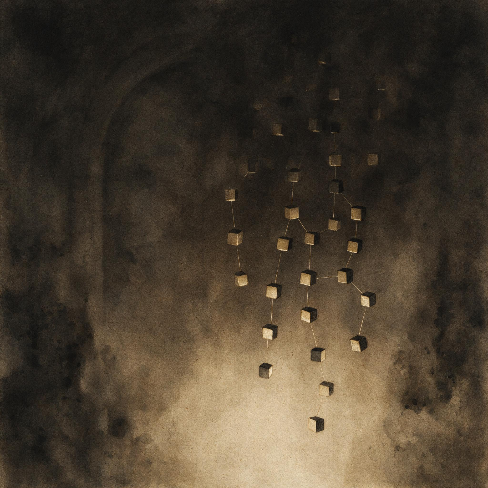

第 3 章
叛变压力下的单线化
根据中央特科1931年5月向各地方组织下发的一份通知残件——原件现存于中央档案馆，编号已不可考，但内容被后续多份文件引用——秘密工作的组织原则发生了明确变化。通知要求：废除党员名册

叛变压力下的单线化：历史出版插图
AI 生成插图，非史实影像。
，取消横向会议，建立逐级单向联络链，接头时间与地点定期更换，不同工作线之间禁止直接沟通。这份通知的签署人没有署名，但传达的指令来自刚刚经历顾顺章事件的中央决策层。通知的措辞是技术性的。它不解释为什么要这样做，只规定做什么和怎么做。
但每一项条款背后，都能看到同一个逻辑：用叛变者的记忆范围来度量安全边界。一个联络员知道几个地址？一个交通员认识几条路线？一个区委书记掌握多少党员的身份？答案被压缩到最小必要范围。超出这个范围的信息，即使有助于提高工作效率，也不再允许掌握。
这个逻辑的形成，需要回到1931年4月那个时间点。顾顺章在武汉被捕的具体日期是4月24日。被捕时，他身上携带的物件后来成为国民党方面评估其价值的依据：一份化名名单、几个地址、一些接头暗号。
但这些只是冰山一角。顾顺章脑子里装着的东西远比纸面上的多。作为中央政治局候补委员和特科行动科科长，他参与过机关选址、人员调配、交通线布置和情报人员安插。行动科的职责范围——惩处叛徒、武装保卫、秘密交通——使他必须接触大量横向信息。他知道交通站的位置，因为行动科需要利用交通站转移人员和物资。他知道领导人的住所，因为行动科负责安全保卫。他知道情报人员的身份，因为行动科有时需要配合情报科的工作。他还知道秘密电台的位置，因为电台的转移和保卫由行动科负责。
更重要的是，他知道国民党特务机构内部的渗透情况。钱壮飞在调查科机要位置的身份，李克农在上海的联络职能，胡底在天津的掩护身份——这些信息在特科内部并非完全隔离。特科初创时确立了工作领域分工：情报科、行动科、交通科、无线电通讯科各有职责边界。但核心负责人之间的信息共享被视为协调工作的必要条件。顾顺章作为三人领导小组成员之一，在决策层面接触到大量情报信息。
这种设计不是疏忽——早期地下组织的规模有限，专业化分工不可能做到彻底隔离，而核心层的信息集中是效率的来源。现在这个效率来源变成了致命弱点。顾顺章在武汉被捕后，几乎立即向国民党方面表示愿意合作。他提出的条件不是保命——他知道自己的价值足以确保这一点——而是要求面见蒋介石本人，并特别叮嘱押解人员不要在抵达南京前将他被捕的消息电告南京总部。他的理由很明确：他知道国民党特务机构内部有中共的情报人员，任何电报都可能被截获。
这个细节暴露了一个令人不安的事实：顾顺章不仅掌握中共的秘密，也掌握国民党特务机构内部的秘密。他的叛变因此具有双向破坏力——既能摧毁中共的地下组织，也能摧毁中共在国民党内部的情报来源。消息最终能够传出，依靠的正是顾顺章试图规避的那条渠道。4月25日深夜，南京中山东路中央饭店二楼，国民党中央组织部党务调查科的机要秘书钱壮飞收到了从武汉发来的六封加急电报。
电报封套上标注着“徐恩曾亲译”字样——徐恩曾是调查科科长，钱壮飞是他的机要秘书，负责处理日常电文往来。按规定，标注“亲译”的电报应由徐恩曾本人拆阅，但那个周末徐恩曾去了上海，钱壮飞握有他留下的密码本。钱壮飞拆开电报后的反应，在后来的各种叙述中被赋予了不同的细节，但核心事实是清楚的：他意识到顾顺章的叛变将导致上海中央机关面临整体覆灭，而武汉方面尚未向南京发出行动指令——顾顺章要求不发电报的要求暂时起了作用。这个时间差是唯一的机会。
钱壮飞派女婿刘杞夫连夜乘火车赶往上海，将消息通知李克农。刘杞夫没有携带任何文字材料——在路上被查获就是死证——只靠记忆传递了几个关键信息：顾顺章叛变，上海机关必须立即转移，周恩来必须立即转移。
刘杞夫于4月26日凌晨抵达上海，找到了李克农。此时出现了另一个问题：这一天不是预定接头日。特科情报系统实行定期联络制度，李克农与上级陈赓的接头有固定时间和地点，临时联络需要通过备用渠道。
而备用渠道的启用有严格限制——每一次启用都会增加暴露风险。但此刻顾顺章随时可能被押解到南京，一旦他与调查科高层见面，整个上海机关的位置就会被逐一标出。李克农启动了备用联络程序。经过几层传递，消息在4月26日下午送到了周恩来手中。周恩来接到情报时的处境，本身就说明了问题的性质。
作为中央军委主席和特科的实际创建者，他是整个上海地下组织中最了解全局的人。他知道每一个机关的地址，知道每一条联络线的走向，知道打入国民党内部的情报人员身份，知道秘密电台的频率和呼号。特科初创时期，这种信息集中是效率的来源——周恩来可以迅速协调各条工作线，调度资源，处理危机。但在顾顺章叛变后，这种集中变成了致命的脆弱点：顾顺章掌握的信息几乎与周恩来一样多。
转移命令在几个小时内下达。优先级排序反映出一个组织在极端压力下的决策逻辑：第一优先级是人员安全——所有中央领导人立即撤离原住所，分散到临时准备的隐蔽点。
第二优先级是切断联络线——顾顺章知道的交通站全部废弃，联络员转移，接头暗号更换。第三优先级是保护情报来源——钱壮飞、李克农、胡底立即撤离，打入国民党内部的其他人员视情况决定去留。第四优先级是销毁证据——文件焚烧，电台拆卸转移，机关内不留任何文字材料。
转移过程本身暴露了横向联系过宽的后果。一些机关在接到转移命令时，工作人员需要通知与自己有横向联系的其他机关。但这些横向联系是顾顺章知道的——如果他提供的情报已经到达国民党特务手中，这些联系线就是陷阱。
事实上，在随后几天里，国民党特务按照顾顺章提供的线索突袭了多处地址，在一些地点抓到了来不及转移的人员。被抓的人大多不是核心干部，而是通过横向联系被牵出的基层工作人员。他们不知道全局，但知道自己联系的那几个人——而那几个人正是特务要找的目标。4月27日，顾顺章被押解到南京。
他在武汉提出的“不要在南京发电报”的要求没有完全奏效——武汉行营在押解他的同时还是向南京发出了电报，只不过那些电报落在了钱壮飞手里。现在顾顺章坐在调查科的审讯室里，面对徐恩曾和其他国民党特务头目，开始系统地供述他所掌握的全部情报。他供述的内容超出了国民党方面的预期。
一般的叛变者能提供自己工作范围内的信息：认识的人、知道的地址、参与过的行动。顾顺章提供的是一张联络图：上海中央机关的位置、领导人的化名和行踪、秘密电台的呼号和联络时间、交通站的分布和接头暗号、打入国民党内部的情报人员名单。他的记忆力极好，能够画出机关内部的房间布局，描述领导人的日常行动规律，指出哪些看似普通的店铺实际上是共产党的联络点。
更重要的是，他供述了共产党在国民党特务机构内部的渗透情况。他指出钱壮飞是共产党的人，李克农是共产党的人，胡底是共产党的人。他告诉徐恩曾：你的机要秘书一直在为共产党工作，你们调查科的电报内容共产党都能看到。
这个消息对国民党特务机构的冲击不亚于上海机关地址的泄露——它意味着国民党方面多年来对共产党的侦查和破坏行动，从一开始就可能被共产党掌握。但顾顺章供述的情报有一个时间差。他是在4月27日之后才向国民党方面详细说明上海机关位置的，而钱壮飞在4月25日深夜已经发出了警报。当国民党特务按照顾顺章提供的情报突袭上海各处地址时，大部分机关已经人去楼空。他们在一些地点发现了焚烧文件的灰烬、来不及带走的办公用品、拆卸到一半的电台设备。他们抓到了一些来不及转移的低层工作人员，但主要领导人全部脱险。这个时间差救了中共中央。
但它不能被归结为运气。钱壮飞能够截获电报，是因为特科此前将他嵌入了调查科机要位置。李克农能够传递消息，是因为特科建立了备用联络渠道。备用隐蔽点能够启用，是因为特科事先布置了应急方案。这些制度安排在这一刻兑现了它们的价值。但制度安排的另一面也同时暴露出来：整个应急响应依赖几个关键节点。
钱壮飞截获电报是第一个节点，刘杞夫传递消息是第二个节点，李克农找到周恩来是第三个节点。这三个节点中任何一个断裂，警报就无法到达决策层。而这三个节点之所以成为节点，正是因为特科的情报系统在设计上是集中的——核心情报人员掌握全局信息，他们的安全决定着整个系统的安全。顾顺章叛变后，钱壮飞的身份暴露，必须撤离南京。这意味着中共在国民党调查科机要位置的情报来源彻底丧失。李克农撤离上海，胡底撤离天津，“龙潭三杰”全部退出隐蔽战线。
特科多年经营的情报渗透网络，因为一个高价值节点的叛变而大面积瓦解——不是因为国民党方面主动侦破，而是因为叛变者知道渗透人员的身份。这就是横向联系过宽带来的系统脆弱性：一个节点掌握的信息越多，他叛变后造成的破坏越大。顾顺章不仅知道上海机关的位置，还知道情报人员的身份；不仅知道自己的行动科人员，还知道情报科和交通科的工作内容；不仅知道共产党的秘密，还知道国民党内部的秘密。
他是特科体系中信息最集中的节点之一，仅次于周恩来。危机过后，中央开始系统评估损失和检讨原因。这次检讨不是针对顾顺章个人的品格问题——虽然顾顺章的生活作风在此后受到严厉批判——而是针对组织结构的脆弱性。问题的核心不是“为什么出了一个叛徒”，而是“为什么一个叛徒能够威胁整个组织”。前一个问题是人事问题，后一个问题是制度问题。
1931年5月，中央通过了关于秘密工作的新规定。规定中列出了实行单线联系的具体措施：废除党员名册——因为名册本身就是一张联络图，落在敌人手里就是批量逮捕的依据。取消横向会议——不同工作线的人员不再集中开会，指令通过联络链逐级传递。建立逐级单向联络链——每个党员只知道自己的直接上级和直接下级，不知道上级的上级是谁，不知道下级的下级是谁。接头时间和地点定期更换——更换指令通过联络链逐级下达。不同工作线之间禁止直接沟通——情报传递、行动配合、资源调配全部通过上级中转。
这些措施的目标可以用一句话概括：让没有任何一个人能够凭记忆覆盖整个系统。单线联系的操作方式在随后几个月逐步细化。一个基层党员只知道他的直接上级——通常是发展他入党或与他单线联系的人。他不知道同一城市还有哪些党员，不知道上级的上级是谁，不知道组织的工作内容除了分配给他的任务之外还有什么。如果他被捕并叛变，他最多只能供出他的直接上级，无法牵出整个组织网络。中层干部的情况类似。一个区委书记知道他所负责区域内的党员情况，但不知道其他区委的书记是谁，不知道市级组织的构成，不知道上级领导的真实姓名和住所。
他的联络方式是：上级派人来找他，在约定的时间和地点接头；他派人去找下级，同样在约定的时间和地点接头。接头地点不是机关所在地，而是公共场所——茶馆、公园、街角。接头暗号定期更换。高层负责人也不能掌握全局。在单线联系制度下，即使是中央委员，也只知道自己分管的工作领域和直接下属，不知道其他委员的活动和住所。
中央开会不再固定在一个地点，而是通过临时通知，在不同地点轮流举行。与会者分批到达，会后分批离开，相互之间尽量减少共同出现的时间。这种制度设计的逻辑是清晰的：把叛变后的杀伤半径控制在一个有限范围内。如果一个基层党员叛变，损失的是一个小组；如果一个中层干部叛变，损失的是一个区域；如果一个高层负责人叛变，损失的是他分管的一条工作线。没有任何一个人能够凭记忆覆盖整个系统，因为系统不会让任何人拥有这样的记忆。
但逻辑的清晰不等于执行的顺利。单线联系大幅压缩了组织的协调能力。在横向联系畅通的时期，不同工作线之间可以直接沟通，协调行动。情报科获得的情报可以迅速传递给行动科，行动科的行动结果可以反馈给情报科，交通科可以根据各方需求调整路线和站点。单线化之后，所有这些协调都必须通过上级中转。一条情报从获取到送达使用者的手中，需要经过多个层级的传递，每一级都有固定的接头时间和地点。
如果中间某一级出现延误——接头人没来、联络点被监视、传递人被捕——情报就会卡在半路。行动配合也变得更慢。特科行动科在执行任务时，需要情报支持、交通配合和后勤保障。
在单线化之前，行动科科长可以直接协调各方资源；单线化之后，他只能通过上级提出需求，由上级逐级下达指令。这个过程可能需要几天甚至几周，而行动机会往往稍纵即逝。
上级对下级的监督也变得更困难。在横向联系存在时，上级可以通过多个渠道了解下级的工作情况：其他工作线的反馈、横向联络员的观察、日常交往中的印象。单线化之后，上级对下级的了解只能依赖下级自己的汇报和偶尔的直接检查。如果下级消极怠工、工作失误甚至暗中动摇，上级很难及时发现。
一个具体的例子明这种困难。1932年上海某区委的一名联络员在执行任务时被捕，他在审讯中供出了自己的直接上级。按照单线化的设计，损失应该到此为止——这名联络员不知道上级的上级是谁，不知道其他联络员的身份。
但问题在于，他的上级在失去与他的联系后，无法判断发生了什么。是联络员被捕了？还是联络员自行离开了？还是联络点出了问题？
按照单线化的规定，上级不能主动去寻找下级——那样可能暴露更多关系。他只能等待，等待组织通过备用渠道传来消息，或者等待足够长的时间后确认联络线断裂。
这种等待在安全上是理性的，但在运作上是痛苦的。它意味着组织在遭受打击后无法迅速评估损失、无法及时调整部署、无法主动恢复联络。每一次破坏都会在联络链上留下一个断口，而修复断口需要从顶端重新建立联络线——这个过程缓慢而脆弱。
换言之，单线联系是以牺牲行动效率换取保密纪律。这个交换关系不是一次性选择，而是一个持续的压力场：每次重大破坏后，保密倾向压过行动倾向，组织变得更保守、更缓慢、更难以协调；而当组织因为过于保守而无法有效行动时，又会产生放松保密纪律的压力，直到下一次重大破坏再次收紧。1931年到1934年间，这个压力场在上海白区反复震荡。
顾顺章叛变后，中央重组特科，全面推行单线联系，上海组织的活动进入一个高度保守的时期。机关规模缩小——许多辅助机构被裁撤，人员分散到更隐蔽的住所。行动减少——惩处叛徒和武装行动被严格控制，只有在确保安全的前提下才执行。情报传递放慢——重要情报需要经过多层中转才能到达使用者手中，时效性大幅下降。
这种保守姿态有效降低了破坏的牵连范围。此后几年中，尽管国民党特务机构持续打击，但每次破坏波及的人数明显下降。1932年的一次破坏中，国民党特务破获了上海某区的一个联络站，抓捕了三人。按照过去的模式，这三人可能牵出十几人甚至几十人；但在单线化的框架下，他们只能供出自己的直接上下级，破坏范围被控制在五人以内。类似的案例在1932年至1933年间多次出现，证实了单线化在控制杀伤半径方面的有效性。
但保守姿态也带来了新的问题。组织活动的减少意味着政治影响力的下降。与群众的联系减弱——地下党员不再像以前那样积极参与群众运动，因为群众活动容易暴露身份。
情报来源收窄——情报人员不再能广泛接触社会各层面，因为每一次接触都有暴露风险。一些基层党员因为长期得不到上级指示而自行其是——他们不知道上级是出事了还是单纯没有联系，只能根据自己的判断行动。一些联络线因为接头间隔太长而中断——接头人忘记了暗号，或者约定的地点发生了变化而无法通知对方。
1932年到1933年间，上海党组织多次出现“失联”现象：某个区委突然与上级失去联系，不是因为被破坏，而是因为联络机制在单线化的严格程序下运转失灵。按照规定，上级应该定期派人去接头；但如果上级那边出了问题——被捕、转移、或者单纯是记错了时间——下级就只能等待。等待的时间越长，恢复联络的可能性越小。有些失联持续了数月甚至更久，最终以组织的实际解体告终。
这种效率与保密的张力不是暂时的过渡性问题，而是单线联系制度的内在矛盾。它在此后几十年中反复出现，成为中共地下制度演进的核心动力之一。
每一次重大破坏都会推动组织向保密一侧摆动，每一次长期的安全期又会带来放松保密纪律的压力，直到下一次破坏再次收紧。单线联系制度本身也在不断调整：在某些时期，为了提高效率，允许有限度的横向联系——比如在特定任务中临时组建跨线工作组；在另一些时期，为了确保安全，横向联系被彻底禁止——比如在国民党特务机构加强渗透的时期。这些调整不是随意的政策摇摆，而是组织在特定环境下对不同风险的评估和应对。当破坏风险高于效率损失时，保密优先；当效率损失导致组织萎缩到无法维持时，放松保密纪律的压力就会上升。这个动态平衡没有最优解，只有不断变化的次优选择。
1931年5月之后，单线联系从特科的经验逐步扩散为白区工作的一般原则。中央向各地方组织发出指示，要求改变原有的联络方式，切断横向联系，建立单线联络链。这个过程不是一蹴而就的——地方组织有自己的运作惯性和实际困难。有些地方的党组织规模较小，党员之间相互认识已久，突然要求切断横向联系在操作上几乎不可能。
有些地方的党组织依赖群众运动，党员需要在公开活动中相互配合，单线化会严重削弱行动能力。这些困难导致了推行过程中的差异化和妥协。在一些地方，单线化被严格执行；在另一些地方，它被部分执行；还有一些地方，它只停留在纸面上。
但制度的方向已经明确：信任的对象从人转向结构隔离，安全的基础从个人忠诚转向制度设计。这一转向的深层逻辑是：地下组织无法杜绝叛变，但可以控制叛变后的杀伤半径。顾顺章事件证明，即使是最核心的负责人也可能叛变，任何基于个人品格的信任都是不可靠的。唯一可靠的是让每一个人都只掌握有限信息，使叛变者无法凭记忆覆盖整个系统。这不是对人性的悲观判断，而是对组织安全的理性计算。
单线化之后，上海地下组织的结构图从一张网变成了一组链条。每条链条独立运作，链条之间只有通过顶端才能连接。这张图看起来比之前更脆弱——任何一条链条的断裂都不会影响其他链条，但反过来，任何一条链条也无法得到其他链条的支援。
组织从一个整体变成了若干孤立的部分，每一部分都在黑暗中独自摸索。
这种结构在随后几年中承受了巨大压力。国民党特务机构的扩张——1932年军统成立后与中统形成竞争态势，双方都加大了对中共地下组织的打击力度——使上海白区的生存环境进一步恶化。中共城市组织的连续受创——1932年至1934年间上海党组织多次遭到破坏，被捕人数累计超过数百人——使组织规模不断缩小。中央机关向苏区的转移——1933年初临时中央迁往中央苏区后，留守上海的组织失去了最高决策层的直接指挥——使协调能力进一步下降。
这些因素叠加在一起，使上海白区工作在1930年代早中期进入了一个持续收缩的阶段。单线联系降低了破坏的杀伤半径，但也使组织在面对系统性打击时难以集中力量反击。当一条链条被破坏时，其他链条甚至不知道发生了什么，只能从上级中断联系这一事实中推断出事的可能性。这种推断往往是滞后的——等到确认失联时，破坏可能已经发生了数周甚至数月。
到1933年初，中央机关被迫撤离上海，迁往中央苏区。留守上海的组织在单线化的框架下继续运作，但规模不断缩小，活动能力持续下降。1934年到1935年间，上海白区工作陷入最低谷：大部分联络线中断，基层党员失联，组织机构名存实亡。1935年的一份国民党内部报告称，上海的中共组织“已不成系统”，残余人员“各自为战，互不联络”——这从反面印证了单线化在保护残余组织方面的效果：国民党特务机构确实无法通过一次破坏牵出整个网络，因为网络已经碎成了互不连接的片段。
单线联系制度在这一轮收缩中既是保护机制，也是限制因素。它保护了组织的残余部分不被彻底摧毁——因为破坏被限制在局部范围内；但它也限制了组织的恢复能力——因为分散的链条难以重新连接起来。当环境好转、组织试图恢复时，单线化造成的碎片化状态成为重建的障碍。
这个矛盾在此后的历史中反复出现。每一次组织重建都面临同样的选择：是恢复横向联系以提高效率，还是保持单线隔离以确保安全？
答案取决于当时的风险评估，但风险本身在不断变化。国民党特务机构的策略在变——从大规模突袭转向长期渗透；日本占领后的环境在变——租界不再是安全区；国共合作时期的关系在变——公开活动与秘密工作的边界需要重新划定。每一种变化都要求组织重新计算效率与保密的交换关系。
顾顺章叛变后推行单线化时，没有人能预见这个制度将在此后几十年中反复调整和重新定义。当时的决策者面对的是一个紧迫的问题：如何防止下一个顾顺章摧毁整个组织？他们的答案是切断横向联系，让每一个人只知上下、不知全局。这个答案在此后被证明有效——再也没有出现过一个叛变者能够威胁整个中央机关的情况。
但答案本身制造了新的问题。单线化如何影响情报工作的效能？如何在隔离状态下保持组织的政治统一？如何在分散的链条之间传递战略指令？这些问题没有现成的答案，只能在实践中逐步摸索。摸索的过程伴随着更多的破坏、更多的调整、更多的代价。1931年5月的那份通知下发后，各地组织的反馈陆续汇总到中央。
反馈的内容各不相同，但都指向同一个感受：组织变慢了。决策变慢了——因为信息需要层层传递。行动变慢了——因为协调需要层层中转。恢复变慢了——因为失联后重建联络需要从顶端开始。这种慢是制度设计的一部分，是安全必须付出的代价。但当慢到一定程度时，组织本身的存在就成问题——一个无法有效行动的地下组织，与一个已经被摧毁的地下组织之间，界限并不像想象中那么清晰。
周恩来在那份通知上倾注的考虑，后来在多个场合被提及。他清楚单线化会降低效率，但顾顺章事件表明不这样做可能意味着整个中央机关的覆灭。这个权衡没有中间道路：要么接受效率损失以换取安全，要么维持效率而承担毁灭性风险。选择是明确的。
制度一旦确立，就开始按照自己的逻辑运行。单线联系不仅改变了组织的联络方式，也改变了组织内部的人际关系和政治文化。信任不再是同志之间的自然情感，而是一种被制度约束的状态：我相信你，不是因为了解你的品格，而是因为即使你叛变，你也不知道足够多的信息来伤害整个组织。
这种信任是冷峻的、计算过的、不依赖个人判断的。它适合一个在极端高压下求生存的地下组织。但它的代价将在接下来的岁月中逐步显现——当这个组织从地下走向公开、从革命党变成执政党之后，单线化所塑造的组织文化和安全逻辑将面临完全不同的挑战。
那是后来的事。1931年的上海，最紧迫的任务是活下来。通知下发后的第一个月，上海各机关完成了联络方式的改造。党员名册销毁了——一些地方是用火烧的，一些地方是用化学药品溶解的，确保不留痕迹。
横向会议停止了——此前定期举行的区委联席会议、工作线协调会议全部取消。联络链重新编排——每个党员被告知了自己的上线和下线，被告知了接头的时间和地点，被告知了备用联络方式。他们没有被告诉的是：除了这条链上的两个人之外，组织中还有谁，他们在做什么，他们住在哪里。一张网变成了若干条不相连的线。每条线独立运作，在黑暗中延伸，不知道其他线的存在。这种结构在此后的几年中将承受反复的打击和收缩。
当上海的组织最终被迫向根据地退却时，这些线有的断了，有的被收回，有的留在原地等待重新接通的指令。它们构成了城市退却的规则基础——不是因为退却需要单线化，而是因为单线化已经决定了退却只能以碎片化的方式进行。